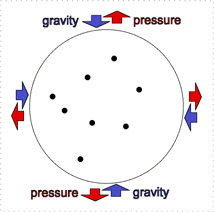

We have developed relationships between the radius, luminosity and temperature of stars. Since the three are related by Equation 1.24, not all combinations are possible. Let’s see what we can expect to find when we look at real stars.
Stars have very wide ranges of luminosity, so it will be helpful to work with the logarithm of Equation 1.24.
\[
\begin{aligned}
L &= 4\pi R^2 \sigma T^4 \\
\log_{10} L &= \log_{10}(4\pi\sigma) + 2\log_{10}(R) + 4\log_{10}T
\end{aligned}
\]
We can plot a graph of \(y=\log_{10} L\) against \(x=-\log_{10} T\) for some value of \(R,\) and we should get a straight line of slope \(-4\).
Note that here \(x\) has a negative sign here because in the \(x\)-axis of Figure 2.1, the temperature increases from right to left. We will see shortly why we use this convention.
Code
import numpy as npfrom numpy import linspace, logspace, log10, pifrom matplotlib import pyplot as pltplt.figure(dpi=300)sigma =5.671e-8for r in [1e10, 5e9, 1e9, 5e8]: # radius, m T=logspace(log10(1000),log10(20000),100) L=4.0*pi*sigma*r**2*T**4#L = 10**(log10(4.0*pi*sigma) + 2*log10(r) + 4*log10(T)) plt.loglog(T,L, label=f'R={r:3.0e} m')#plt.plot(-log10(T), log10(L), label=f'r={r:3.0e} m')plt.xlim(plt.xlim()[::-1])plt.xlabel('$T$ [K]')plt.ylabel('$L$ [W]')plt.title('Luminosity - temperature')plt.grid(True,which='both',alpha=0.4)plt.legend();
Figure 2.1: Log-log plot of luminosity vs temperature for different values of the radius R.
We see that for each radius \(R\) there is a straight line relationship when plotted on logarithmic axes.
Lower radii lie on lines toward the bottom of the plot.
What can we tell from this plot, and from the formula for the total luminosity relating temperature and radius?
If two stars have the same radius (lie on the same coloured line in Figure 2.1), then the hotter one will have higher luminosity (the temperature decreases from left to right in the plot)
If two stars have the same temperature (lie on the same line parallel to the y axis), then the larger one must be more luminous
If two stars have the same luminosity (lie on the same line parallel to the x axis), then the smaller one is hotter.
Here (and embedded below), you can visualise how a star’s temperature, luminosity and radius change by tweaking one or more of this parameters, and see how the location of the star changes in a Luminosity-Temperature graph.
We know also that stars are not static, they change and evolve with time. This means that their luminosity, radius and temperature of a star are not always the same. This means that a star will move across the Luminosity-Temperature plot of Figure 2.1 during its lifetime.
So where do stars fall on this plot? And how do they move around it during their lifetime?
2.2 The Hertzsprung-Russell (H-R) diagram
Two astronomers independently devised ways to represent catalogued stars on a diagram, based on their observed properties:
Ejnar HERTZSPRUNG (Denmark 1873 – 1967)
Henry Norris RUSSELL (USA, 1877 – 1957)
They constructed the plot now known as a Hertzsprung-Russell diagram, universally called an H-R diagram for short.
Figure 2.2: H-R diagram: Luminosity vs Temperature
Stars are found to cluster in distinct areas of the HR diagram
80% to 90% of stars lie on a strip called the Main Sequence
There are other branches of stars: White Dwarfs, Giants and Supergiants
Remember that the temperature (x-axis) decreases as we go from left to right
We use the H-R diagram to understand stellar evolution
Why are we justified in giving the names “dwarfs” and “giants” to these classes?
Over 1.3 billion stars contained in Gaia Data Release 2
Note the colour scale is non-linear - white/yellow regions are more populated
Axes are colour index (\(G_{BP} - G_{RP}\), Blue - Red magnitude, i.e. blue stars on the left, redder stars on the right) vs absolute magnitude (\(M_G\)): We know these are related to temperature and luminosity
We can see the main sequence, giants, and white dwarfs clearly
There are other less populated clusters too: we will see what they mean for stellar evolution
Here is an annotated HR diagram showing temperature and luminosity along with magnitude and colour index.
Figure 2.4: H-R diagram showing temperature and luminosity along with magnitude and colour index.
2.2.2 Interpretation of the HR diagram
Only certain combinations of luminosity and temperature are allowed
The HR diagram shows stars with a wide range of ages
Most stars sit on the main sequence
Let’s assume that stars move around on the HR diagram, from one class to another, as they evolve
What does this tell us?
We are looking at a snapshot of the stellar population
Stars follow ‘tracks’ on the HR diagram over their lifetime
Clusters in the HR diagram are stars at similar stages of their lives
The number of stars in each part of the diagram is proportional to the duration of that stage of their evolution
2.2.3 The Main Sequence
The main sequence is the most populated part of the HR diagram (80-90% of stars). We can deduce that stars spend most of their lives on the main sequence.
The main sequence has most variation from top-left to bottom-right, along a line of roughly constant radius. (This is not exact as there is a range of stellar radii)
The top-left blue stars are hotter and more luminous, and therefore require more power
The bottom-right red stars are much dimmer and cooler
Hot blue stars are using up their fuel much more quickly
We will see later the implications for their evolution
2.2.3.1 The main sequence: limits
There are two cut-offs to the main sequence:
At the top: extremely luminous stars blow off material from their surface through radiation pressure, naturally limiting their mass
At the bottom: very cool red stars are not hot enough to begin nuclear reactions: the temperature in their core is too low
We can suppose that luminous blue stars have high mass and dim red stars low mass, and that this is the main determining factor of where a star appears on the main sequence. (We will check this theoretically later.)
2.2.3.2 The main sequence: mass and luminosity
Later we will see that luminosity is increased with higher mass: \(L\propto M^\alpha.\)
We can estimate the time a star spends on the main sequence with
The most massive stars spend the least amount of time on the main sequence
2.2.4 Giants and Supergiants
Giants and supergiants sit above the main sequence in the top-right
Large \(L\) but low \(T\), so \(r\) must be very large: ‘giants’
This area is less populated than the main sequence, so stars spend less of their lives in this phase
We will see that they reach this stage of their life after they spend time on the main sequence
We need to explain what causes the radius of the star to increase!
2.2.5 White dwarfs
White dwarfs sit at the bottom-left of the HR diagram
Below the main sequence, so radius smaller: ‘dwarfs’
\(L\sim 0.01 L_\odot\), none visible to the naked eye
\(T\sim 16000\,\)K.
\(R\sim R_\odot /70\) (similar size to the Earth)
We need to explain why the radius is so small!
How do they get to be so hot?
We need Stellar Evolution to explain all this!
2.3 Colour indec and classification schemes
We have seen that on the main sequence, there are a range of star colours. We can use this to classify them.
Hot stars appear blue, cool stars appear red
We can quantify this by measuring the flux (magnitude) in different wavelength bands
The Photometric system divides the spectrum into commonly used bands
A common convention is the UBVRI system:
U-band (ultraviolet): centred on 350 nm
B-band (blue) : centred on 440 nm
V-band (visible): centred on 550 nm
R-band (red): centred around 600 nm
I-band (near-infrared): around 800 nm
Filters are placed over the telescope to select a band. A photograph of a set of filters is shown in Figure 2.5.
Figure 2.5: UBVRI filters.
Different instruments have slightly different filters from different manufacturers. An example is shown in Figure 2.6.
Figure 2.6: UBVRI
You don’t have to memorise this for the course.
In the previous chapter we saw that black bodies emit at all wavelengths but the amount of light emitted at each wavelength is not the same. It depends on the temperature of the black body, which is related to the position of the peak and therefore to the colour of the black body (see Figure 2.7).
You can now see how observation through filters give us different information on the flux observed at different wavelength windows.
Figure 2.7: Emission spectra of black bodies at different temperatures, with the peaks at different wavelengths of the visible part of the light spectrum.
2.3.1 Colour Index
The colour index is the numerical difference in magnitudes between measurements made in two wavelength bands
To measure the index, measurements are made successively through two different filters, such as U and B, or B and V to give the usual colour indices, e.g.
B - V Difference between magnitude in Blue and Visible bands
V - I Difference between magnitude in Visible and Near-Infrared bands
Note
Note that the bolometric luminosity is not measured by any of the filters! In practice, usually the visual magnitude is measured and then a correction (the bolometric correction) is applied to it, to find the bolometric magnitude. This is generally important when doing physics calculations using the total Luminosity, as the correction depends on the temperature of the star. For this course we will ignore this, and you can assume that luminosity problems will be set with the bolometric magnitude. Howewver, in historical sources, the V-band magnitude is used.
2.3.2 Colour Index Examples
The Sun, which appears yellowish, has
U band apparent magnitude -25.96
B band apparent magnitude -26.09
V band apparent magnitude - 26.74
So the B-V colour index for the Sun is +0.65
Figure 2.8: Orion Nebula, containing Rigel.
Rigel which appears bluish has
B band apparent magnitude 0.09
V band apparent magnitude 0.12
So the B-V colour index for Rigel is -0.03
So the smaller the colour index (i.e lower position on a number scale that ranges from positive, through zero, into negative numbers), the more blue (and hotter) the star
From the Planck curve you would think that any given star surface temperature T would have automatically determined values of the colour indices
However real stars are a bit more complicated than ideal black bodies…
2.3.3 Colour Index and the HR diagram
Colour Index was the original quantity plotted along the x-axis in the HR-diagram
This is why \(\log_{10}T\) decreases going from left to right!
The exact relationship between Colour Index and effective temperature is not simple, but we can state it approximately as :
Black bodies emit a continuous spectrum: this means that light is emitted at all wavelengths. If this goes through a prism or diffraction grating, we are able to see the ‘rainbow’ pattern where light is divided into all its components (see Figure 2.9). We will come back to explaining the emission and absorption spectra in this figure shortly.
Figure 2.9: Emission and Absoption spectra
2.4.1 Light from the Sun
We anticipated that stars are not really black bodies, and in the previous chapter we saw that the plot of the Solar irradiance (Figure 1.21) presents some features such as lines that we still have to explain.
Dark absorption lines, superimposed on the expected continuous spectrum
The lines are fingerprints of the elements present in the Sun’s atmosphere
Figure 2.11 shows a comic version of Sun’s spectrum, highlighting the relationship between the dark lines and the elements in the Sun’s atmosphere.
Figure 2.11: Comic version of the Sun’s spectrum. Source: XKCD.
2.4.1.1 Light from the Sun – early observations
In 1835 a French philosopher, Auguste Comte, wrote the following about the stars: “We see how we may determine their forms, their distances, their bulk, their motions, but we can never know anything of their chemical or mineralogical structure.”
1802: Wollaston discovered dark lines superimposed on a continuous spectrum by watching sunlight through a prism
1814: Fraunhofer catalogued 475 of these lines. He observed that two of the missing yellow lines of the Solar spectrum had exactly the same wavelength as the two yellow lines emitted by sodium (salt) when sprinkled on a flame.
Wollaston and Fraunhofer showed that the continuum light from the Sun was absorbed at discrete wavelengths.
To understand this we need to answer one of our first questions: what are the stars made of?
Stars are mainly hydrogen
Hydrogen emits light only at particular emission lines when excited in the laboratory (see, for example, Figure 2.15)
So why do we see a continuous spectrum?
Why do we see absorption lines in the spectrum of stars?
Why do we see emission lines from regions of the sky nears stars? (Emission nebulae)
2.4.2 Kirchoff’s Laws of Spectroscopy
In 1860 Kirchhoff and Bunsen published rules for the production of spectral lines, summed up in Figure 2.12.
Gustav Kirchhoff studied the three types of spectra seen under different conditions and, in 1860, derived laws to explain them.
1. A hot and opaque solid, liquid or highly compressed gas emits a continuous blackbody spectrum (as named by Kirchhoff) with no spectral lines
2. A hot, transparent gas, illuminated by a continuum source, produces a spectrum of bright emission lines
3. If a continuous spectrum passes through a transparent gas at a lower temperature, the cooler gas will absorb at characteristic wavelengths resulting in dark absorption lines
For 2 and 3, the number and colours of the lines depends on the elements present in the gas.
Kirchhoff produced these laws without knowing about the energy levels in atoms!
Figure 2.12: A scheme of Kirchhoff’s laws of spectroscopy.
2.4.3 Ideal and real spectra
We can now answer the questions about why we get absorption of emission lines.
The surface of the star is assumed to radiate as a blackbody.
Absorption spectral lines are due to the atoms in the atmosphere above the surface (see Figure 2.13)
Spectra of some objects (e.g. galaxies) can also contain emission spectral lines (see Figure 2.14). Spectroscopy gives us information about the chemical composition of the stars, their atmosphere, radius, temperature, nature, motion…
Figure 2.13: Comparison between an ideal blackbody spectrum and a real stellar spectrum observed. Source: SDSS.
Figure 2.14: Emission spectrum of a galaxy. Source: SDSS.
2.4.4 Spectral type of stars
By 1890 stars were classified in order of the line strength of hydrogen :
By the end of the 19th Century it was possible to photograph the spectra of light from many stars.
Annie Jump Cannon (1863 - 1941) working at the Harvard College Observatory from 1896 examined the spectra of nearly 400,000 stars!
She found that the spectra of light from stars fell into natural categories based on the strength of certain key line features (principally the Hydrogen lines)
She created a much more simple classification system based on this, the Harvard Classification, which is still in use today
In this system every star has a letter that describes its colour, known as its spectral class.
This classification was simpler, but it was not understood what caused the lines.
In 1925 Cecilia Payne Gaposchkin put the pieces together and showed
that stars are mainly composed of Hydrogen and Helium
that the spectral class and line behaviour that Cannon observed were related to temperature
The Harvard classification was therefore a sequencing of stars from hottest to coolest
So while the Colour Index is a straightforward objective measure of colour, it can be more useful to talk about the spectral class (or type) of a star.
2.4.5 Harvard Spectral Classification
The Harvard Classification Scheme considers the changes in other lines as well as hydrogen. It gives a sequence indicating source temperature:
O, B, A, F, G, K, M
‘O’ stars are hot and blue
‘M’ stars are cool and red
Temperature decreases from left to right
The odd letter sequence is a rearrangement in temperature order of an older classification scheme
Under this scheme, the Sun is a G-type star
Each type has also subclasses, denoted by numbers from 0 to 9 (e.g. A0, A1, A2,…).
Figure 2.16: Spectral classes are related to the temperature of stars.
2.4.5.1 Harvard Classification - mnemonics
Traditional: Oh, Be A Fine Girl/Guy, Kiss Me
Local: Old Blind Astronomers From Glasgow Keep Mice
Personal: Oil Butter And Fat Gonna Kill Me
Make your own and remember it!
2.4.6 Harvard spectral classes properties
O : Hottest, blue-white stars
Few lines, strong He II absorption (sometimes emission) lines
B : Hot, blue-white stars
He I absorption lines strongest at B2, H II (Balmer) absorption lines becoming stronger
A : White stars
Balmer absorption lines strongest at A0, becoming weaker later
F : Yellow-white stars
Ca II lines continue to strengthen as Balmer lines continue to weaken
Neutral metal absorption lines (Fe I, Cr I)
G : Yellow stars
Solar-type spectra
Ca II lines continue to strengthen
Fe I and other neutral metal lines continue to strengthen
K : Cool orange stars
Ca II, H and K lines strongest at K0, becoming weaker later
Spectra dominated by metal absorption lines
M : Coolest red stars
Spectra dominated by molecular absorption bands, especially titanium oxide (TiO)
Neutral metal absorption lines remain strong
Figure 2.17: Relative strengths of stellar lines in different spectral classes.
Figure 2.18: Example spectra for different spectral classes and relative strength of the lines related to different elements.
Figure 2.19: Harvard Classification example spectra and table.
2.4.6.1 Harvard Subclasses
Each type is subdivided into 10 subclasses. These reflect gradual temperature changes
e.g. A0, A1, A2. . . . . . A7, A8, A9
0 represents the hotter end of a subclass
9 represents the cooler end of a subclass
e.g O9 is next to B0.
Allocation of subtype depends on line strengths and ratios.
You can explore spectra and properties of astronomical objects at the Sloan Digital Sky Survey (SDSS).
2.4.6.3Question
Not knowing the spectral class of the star in Figure 2.20, can we take a guess from its spectral lines and properties of the spectrum?
Figure 2.20: Example of stellar spectrum, taken from the SDSS.
Hint
What are the main lines present in this spectrum? Check the table above.
Solution
This is a G2 star (CaII lines becoming stronger). You can notice that the H and K lines of CaII are stronger and there is a visible G band, as well as lines of other neutral metals such as Mg. You can check it out by looking at the same coordinates in the SDSS website.
2.4.7 Morgan-Keenan Luminosity Class
The Harvard classification scheme does not completely describe a star as it cannot distinguish between stars with the same temperature but with different luminosities.
For example it cannot distinguish between main sequence (dwarf) stars, giant stars and supergiant stars Think of the different stars that could lie on a vertical (i.e. constant temperature) line towards the right-hand side of the HR diagram.
The Morgan-Keenan luminosity class (MK class) was established to add discrimination on the basis of luminosity
In its current form, the MK class system ranges from (roman numeral) I to VII
Class I is subdivided I-O (hypergiant star), through Ia (bright supergiant) and Ib (dim supergiant)
Then there are classes II, III , IV and V (going from bright giants down to main sequence dwarfs)
The systems ends with classes VI (sub-dwarf) and VII (white dwarf)
2.4.7.1 HR diagram with MK luminosity class
Figure 2.21: HR diagram with MK luminosity class
Luminosity classes are determined (mainly) from the observed widths of spectral lines.
Several effects can cause broadening of the spectral lines we observe
Common to the broadening effects is their dependence on star temperature and pressure
High pressure and temperature cause atoms to collide more frequently, broadening their spectral (line) emission
The effect is seen particularly in hot, dense stars like White Dwarfs
2.5 Mass-luminosity relationship
Observations from binary systems (where masses can be determined) indicate a relationship between mass and luminosity.
Note
This is only true for Main Sequence stars.
We find: \[
\frac{L}{L_\odot}\approx \left(\frac{M}{M_\odot}\right)^\alpha
\tag{2.2}\]
The value of \(\alpha\) depends on the fit used in the data, but is roughly \(3.0 \le \alpha \le 3.5\).
Figure 2.22: Mass-Luminosity relationship for stars on the main sequence.
2.5.1 Mass-luminosity and the HR diagram
Figure 2.23: Mass-Luminosity in the HR diagram.
The Mass-Luminosity relationship holds only for Main Sequence stars
The more massive a star, the more luminous it is
A star only 20 times the mass of the Sun would be around 35000 times as luminous as the Sun
The most massive stars are at the upper left hand part of the HR-diagram
The least massive stars are at the bottom right
The Sun, a G2V star, sits around the middle of the Main Sequence
2.5.2 Explaining the mass-luminosity relation
Why do more massive stars on the main sequence have higher temperatures?
Massive stars have large gravitational compression of their cores because of the large mass of the outer layers
For equilibrium, massive stars therefore need high radiation pressure pushing outward to balance the large gravitational compression
The high thermal pressure is provided by high temperature in a massive star’s core – higher than the temperature found in low-mass star.

Figure 2.24: Hydrostatic equilibrium condition in a star. The gravity is balanced by the internal pressure. The higher the temperature, the higher the thermal pressure (the atoms in the core will have higher kinetic energy).
Why are more massive stars on the main sequence more luminous?
The nuclear reaction rate in a star is very sensitive to the core temperature. Even a slight increase in temperature makes the nuclear reactions occur at a MUCH higher rate. So a slight increase in the mass of the star produces a large increase in the star’s luminosity.
2.5.3 Mass-Luminosity Relation – implication
The luminosity is a very strong function of mass: \(3.0\le\alpha\le3.5\) is quite big.
There are great implications for how long stars live on the Main Sequence
Massive stars have very short lifetimes because they burn up their fuel more quickly than less massive stars
We will return to this when we study stellar evolution.
2.6 Recap
Stars can be mapped on the HR diagram based on their colour/temperature/spectral class vs magnitude/luminosity
Stars are mostly distributed on the main sequence (they spend most of their lifetime there), but other classes are giants and white dwarfs.
The stars at the top left of the main sequence in the HR diagram are blue, hotter, more luminous and more massive than the ones red stars at the bottom right
Kirchhoff’s laws describe how continuous, emission and absorption spectra are produced
Spectral types are classifies based on their temperature and chemical composition according to the ‘OBAFGKM’ Harvard spectral classification
Stars on the main sequence have a mass-luminosity relationship
2.7 Quick test!
Q1
What does the x-axis of the Hertzsprung-Russell (H-R) diagram represent?
✗Luminosity
✗Absolute magnitude
✓Temperature
✗Radius
Temperature
Q2
In the H-R diagram, where are red giants typically located?
✗Top left
✓Top right
✗Bottom left
✗Bottom right
Top right
Q3
Stars spend the majority of their lifetime in which branch?


{kind=link}